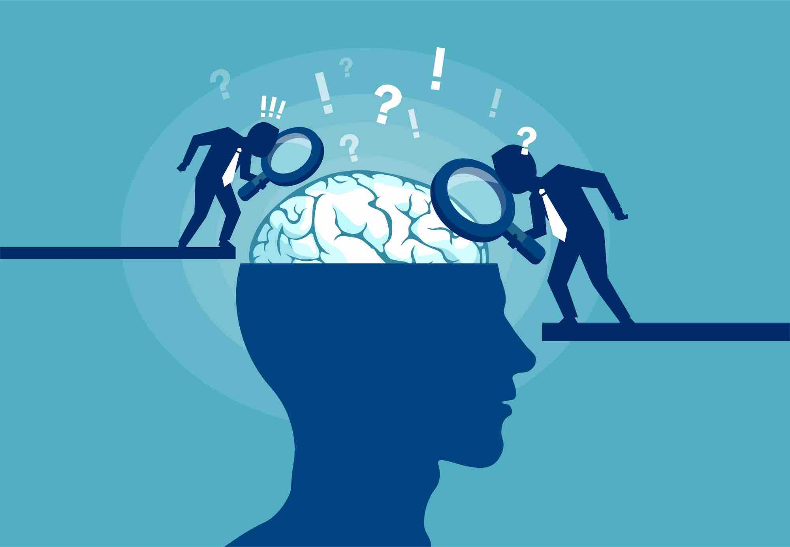
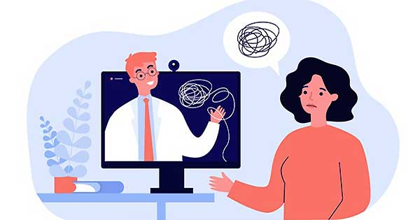
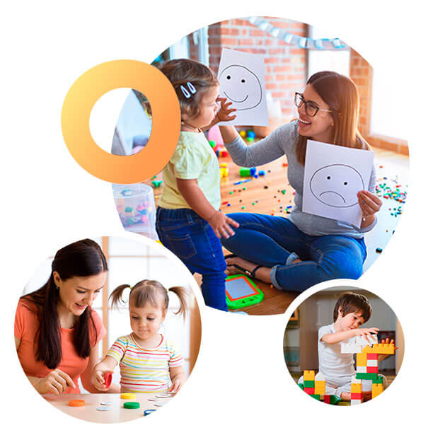
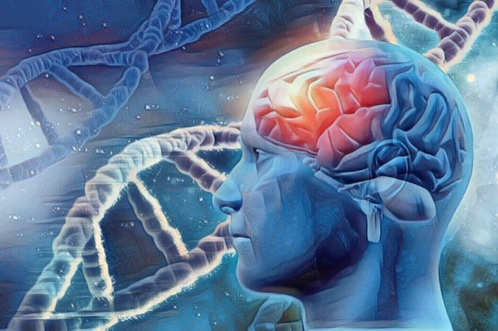
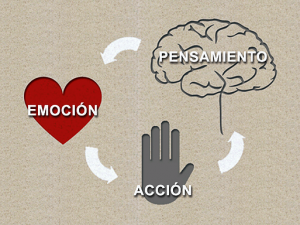
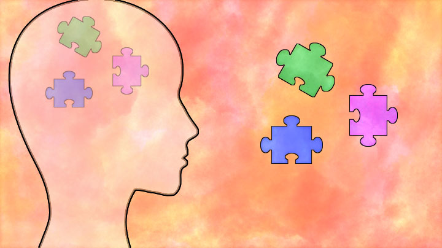
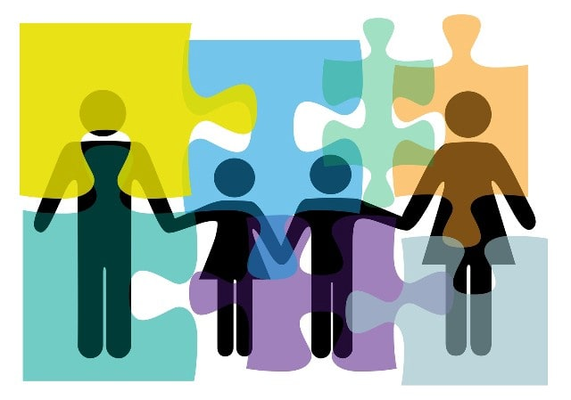
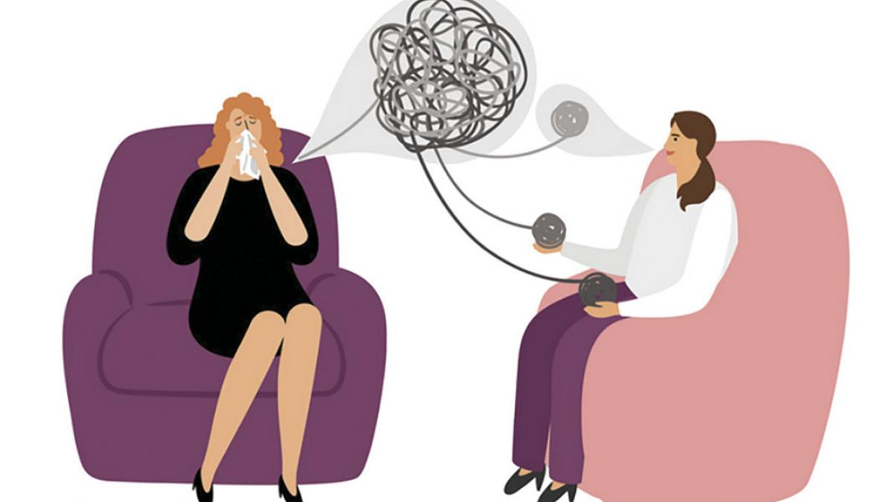

¿Qué es un tratamiento psicológico?
Un tratamiento psicológico es una intervención profesional, basada en técnicas psicológicas, en un contexto clínico (Centro de Salud Mental, Hospital, consulta privada, Asociaciones de personas afectadas, etc.). En ella un especialista, habitualmente un psicólogo clínico, busca eliminar el sufrimiento de otra persona o enseñarle las habilidades adecuadas para hacer frente a los diversos problemas de la vida cotidiana. Ejemplos de esto son ayudar a una persona a superar su depresión o reducir sus obsesiones, trabajar con una familia con conflictos entre sus miembros para que sepan comunicarse mejor, o enseñar a un adolescente a relacionarse con otros compañeros de modo más sociable y menos agresivo.
Consultas online
Consulta de psiquiatría y psicología online
Muchas personas sufren en algún momento de sus vidas un problema de salud mental. Desde depresión o ansiedad, pasando por insomnio, hasta trastornos más graves. Cualquier malestar psicológico, por insignificante que parezca, puede suponer un obstáculo muy difícil de superar sin ayuda. Algunas personas sienten vergüenza de reconocer sus vulnerabilidades y evitan pedir ayuda. Afortunadamente, existen profesionales altamente cualificados y entrenados para ayudar a estas personas, incluso sin que salgan de sus casas utilizando un servicio de salud mental online.
Las consultas online son cada vez más demandadas y pueden ser una buena alternativa a las consultas presenciales.
La psiquiatría y psicología online es un servicio cada vez más demandado y tiene un número creciente de usuarios. Los pacientes se conectan con los profesionales de la salud mental en tiempo real a través de vídeo-conferencia, vídeo-llamada, llamadas
telefónicas, mensajería instantánea y correo electrónico. El paciente solo tiene que conectarse desde su ordenador, tablet o smartphone.
En SaluMent contamos con un equipo de profesionales especializados en distintas áreas y por grupos de edad. Los mismos profesionales que atienden en el centro, atienden online. En la modalidad online, ofrecemos los siguientes
servicios:
El servicio de salud mental online nos permite evaluar y tratar a cualquier persona, esté donde esté. Un móvil es suficiente para poder conectarte con nosotros y tener una consulta online. Utilizamos plataformas de comunicación online con un sistema de cifrado avanzado que garantizan la protección de la confidencialidad.
Psiquiatría
¿Qué es la psiquiatría?
La psiquiatría es una especialidad de la medicina, que se dedica al estudio y promoción de la salud mental, así como al diagnóstico y tratamiento de los trastornos mentales. La psiquiatría también se ocupa del tratamiento de los trastornos de comportamiento y de las adicciones. Como rama de la medicina es relativamente reciente. Nació en el siglo XIX, aunque ha sido a mediados del siglo XX cuando verdaderamente ha evolucionado con mayor rapidez y rigor científico.
La psiquiatría es la especialidad de la medicina que se ocupa de la salud mental de las personas.
¿Qué hace un psiquiatra?
La labor del psiquiatra es la de velar por la salud mental de la población. El psiquiatra se dedica a escuchar el relato de las personas que sienten un malestar, indaga en el posible origen de ese malestar, explora la presencia de síntomas psíquicos asociados al malestar y estudia las repercusiones actuales y futuras. Toda esta información le da acceso a hacer una aproximación diagnóstica que permita ofrecer un tratamiento adecuado. A diferencia de lo que la gran mayoría de la gente piensa, el psiquiatra no solo se dedica a prescribir medicamentos. Además de la habilidad para llegar a un correcto diagnóstico, tenemos diversas herramientas que podemos utilizar para ayudar a las personas a recuperar su salud mental y para tratar sus síntomas. Tenemos en nuestras manos un abanico de opciones terapéuticas que podemos mostrar a nuestros pacientes para que elijan la que crean conveniente. Estas opciones van desde la promoción de la salud (mediante cambios de hábitos comportamentales) y la psicoeducación (información, educación y lucha contra el estigma sobre la enfermedad mental), hasta la psicoterapia, el tratamiento farmacológico o la valoración por otro especialista de la medicina.
¿Quién necesita un psiquiatra?
Son muchos los problemas que puede tratar un psiquiatra. Tanto es así, que se estima que hasta una de cada tres personas en el mundo se podrían beneficiar de acudir a un psiquiatra a lo largo de su vida. Se recomienda acudir a un psiquiatra en busca de ayuda a toda persona que sufra un cambio en el estado de ánimo, en su conducta o en sus hábitos, especialmente cuando este cambio es drástico o de una duración superior a dos semanas.
¿Qué trata un psiquiatra?
A continuación, puedes encontrar una selección de las enfermedades por las que más comúnmente se acude a una consulta de psiquiatría. Si haces clic en la imagen, te llevará a la descripción de esa enfermedad y a toda la información que necesitas saber.
Psicoterapia
¿Qué es la psicoterapia?

La psicoterapia es utilizada por psiquiatras y psicólogos para tratar el malestar psicológico y los problemas de salud mental. Emplea la comunicación como principal herramienta de intervención. Por tanto, los psicoterapeutas somos expertos en el uso del
lenguaje (verbal y no verbal) y es lo que utilizamos para ayudar a las personas con un problema, que son expertas y máximas conocedoras de sí mismas.
La psicoterapia se sirve de una relación de confianza y respeto mutuo, con una asimetría en el contenido de la información que fluye entre ambas personas. El terapeuta va a conocer muchas cosas de la vida del paciente,
mientras que el paciente apenas va a conocer detalles de la vida de su terapeuta. Este contraste diferencia una relación de amistad frente a la relación terapeuta-paciente, denominada relación terapéutica. El objeto de la conversación
mantenida entre ambas personas va a ser la vida del paciente y la relación establecida entre ambos. Así se logra optimizar el tiempo de tratamiento al máximo.
Hasta ahora, hemos descrito la psicoterapia individual. También disponemos de otras modalidades de psicoterapia, como son la psicoterapia de grupo, la psicoterapia de pareja y la psicoterapia familiar.
¿Quién puede hacer psicoterapia: psicólogos o psiquiatras?
Ambos profesionales pueden estar cualificados y tener las bases teóricas para hacer psicoterapia, pero nadie más. Los colegios profesionales de psicólogos y médicos defienden desde hace años que solo estos colectivos puedan ejercer la psicoterapia.
Aparte de la carrera universitaria de medicina o psicología, un psicoterapeuta puede completar su formación con una titulación específica de postgrado en psicoterapia. Hay muchos cursos universitarios y másteres disponibles
en nuestro país: los hay específicos por enfermedad o por corrientes teóricas concretas.
Por definición, todos los psiquiatras han tenido que pasar por cuatro años de formación, supervisados por psiquiatras adjuntos, en un hospital público. En este periodo el nivel de experiencia que se obtiene y de conocimientos
son muy elevados. Por el contrario, tan solo una minoría de los psicólogos obtienen su especialidad en psicología clínica a través de este mismo itinerario. Esto no significa que los psicólogos estén menos preparados, sino que
tendrán que compensarlo con muchas horas de supervisión y formación de postgrado.
Psicología infanto-juvenil
¿Cómo sé si mi hijo necesita un psicólogo?

Es común dudar sobre el criterio a seguir para saber si nuestro hijo necesita ayuda psicológica. Normalmente, son los propios padres quienes detectan un comportamiento anómalo en el menor. Mientras que, otras veces, son los profesores del colegio del
niño quienes perciben el problema e informan a la familia.
Ante pensamientos, conductas o emociones que interfieren con su desarrollo a nivel familiar, social o escolar, es aconsejable consultar con un especialista. De este modo, podemos prevenir que un comportamiento anómalo
se convierta en un problema para el niño. Algunas de las señales que debemos observar en nuestros hijos son:
- Cambio de conducta repentino
- Empeoramiento significativo en el rendimiento escolar
- Dificultades en la lectura y en la escritura
- Aislamiento de sus compañeros de clase, familiares o amigos
- Hiperactividad
- Tristeza
- Decaimiento
- Miedos
La infancia es el periodo vital donde asientan las bases de una buena salud mental y equilibrio emocional.
Al igual que los adultos, los niños también se tienen que enfrentar a diversas dificultades y problemas a lo largo de su infancia. Cada etapa de su desarrollo presenta desafíos específicos que hay que conocer para ayudarle a que los supere. A pesar de que los niños no suelen ser capaces de expresar verbalmente su malestar, sí que lo manifiestan a través de cambios en su comportamiento o en su estado de ánimo.
Terapia de pareja
La pareja
La pareja es una de las áreas más importantes de la vida, sino la más importante. Es la persona con la que convivimos, con quien dormimos y con la que más áreas de la vida compartimos. Cuando la relación de pareja es positiva, esta sirve de sostén cuando otros aspectos de la vida se nos complican. Pero, cuando la relación se convierte en negativa, nos genera malestar e insatisfacción. Estas emociones negativas pueden invadirnos y dañar desde nuestras aspiraciones laborales hasta las relaciones con otras personas, incluidos los hijos cuando se tienen.
Una buena relación de pareja da estabilidad a nuestra vida.
En qué consiste la terapia de pareja
La terapia de pareja supone un espacio para reflexionar acerca del conflicto que hay en la relación y la forma en la que se está gestionando. Es un proceso de descubrimiento para ir desvelando cómo se ha llegado a la situación actual y por qué se mantiene. El fin de la terapia se alcanza cuando los miembros de la pareja acuerdan una solución al conflicto que sea la mejor para ambos. Pasar de la pelea o el distanciamiento al acercamiento, al poder pensar en el otro, pero también en uno mismo.
Neuropsicologia
¿Qué es la neuropsicología clínica?
La neuropsicología clínica es una disciplina incluida en la psicología clínica que se centra en el funcionamiento cerebral. Se ha convertido en una herramienta fundamental para el diagnóstico de múltiples problemas, desde el déficit de atención de los
escolares hasta la enfermedad de Alzheimer.

El servicio de neuropsicología clínica de SaluMent ofrece evaluaciones, apoyo y tratamiento a adultos y niños con dificultades cognitivas o de aprendizaje. Evaluamos y tratamos problemas muy diversos: desde los que se
inician en la infancia (TDAH o autismo) hasta los que aparecen en ancianos (demencia, Alzheimer o ictus). También evaluamos el daño cognitivo en adultos que han sufrido daño cerebral, ya sea por traumatismos, consumo de sustancias
o enfermedades mentales graves.
¿Qué miden los test neuropsicológicos?
Los test neuropsicológicos evalúan las fortalezas y debilidades de la persona en lo que se refiere a: atención, memoria, lenguaje, inteligencia, velocidad de procesamiento, función ejecutiva, visión espacial, estado de ánimo, conducta y rasgos de personalidad.
Atención a domicilio
Psiquiatra y Psicólogo a domicilio en Tegucigalpa
Los servicios de psiquiatra a domicilio y psicólogo a domicilio surgen ante la creciente demanda de atender a las personas en sus casas o lugares de residencia. La atención a domicilio está pensada para personas de todas las edades, desde menores de edad
hasta ancianos.
La principal ventaja de la visita a domicilio es el trato directo entre el paciente y el profesional, que hace la relación más cálida y humana que la viodeconferencia. Otra importante ventaja es que el profesional puede
observar de primera mano el lugar en el que habita y se desenvuelve el paciente. La información que puede recoger de la casa, el entorno y los familiares convivientes es muy valiosa de cara a planificar un tratamiento.
Terapia Cognitivo Conductual
La Terapia Cognitivo Conductual es una de las terapias psicológicas que más se usan en la actualidad. Este modelo terapéutico pertenece a lo que se conoce como segunda generación de las terapias de la conducta, y se caracteriza porque considera que los
patrones anormales de conducta tienen su origen en la existencia de una serie de esquemas y procesos de pensamiento distorsionados y disfuncionales, que junto a los patrones de conducta aprendidos causan un gran sufrimiento al
paciente.

En concreto, desde esta propuesta se entiende que para generar cambios terapéuticos es necesario intervenir tanto en los hábitos y rutinas observables como en los esquemas de pensamiento que dan forma a nuestra manera
de interpretar las cosas y de plantearnos objetivos.
Así pues, el objetivo de este tipo de terapia es modificar las creencias, pensamientos y hábitos disfuncionales con una serie de técnicas cognitivas y conductuales. Por ejemplo, el entrenamiento en habilidades sociales,
las técnicas expositivas, el modelado o la reestructuración cognitiva, entre otras.
Terapia Cognitiva Basada en Mindfulness
Si anteriormente he dicho que la terapia cognitivo conductual pertenecía al grupo de terapias llamadas de segunda generación, la Terapia Cognitiva Basada en Mindfulness (MBCT, por sus siglas en inglés) se considera una terapia de tercera generación. Estas
terapias se centran en el diálogo y el contexto funcional de la persona, y buscan la aceptación y la actitud no enjuiciadora como manera de mejorar la salud emocional de las personas.
El MBCT fue desarrollado por Zindel Segal, Mark Williams y John Teasdale, como un programa de ocho semanas para la prevención de recaídas en pacientes con depresión, el estrés emocional y la ansiedad. Combina ejercicios
de meditación y atención plena con el aprendizaje de habilidades de la terapia cognitiva, como la detección e interrupción de patrones desadaptativos de pensamiento que llevan a sufrir depresión o ansiedad.
Terapia de Aceptación y Compromiso
La terapia de aceptación y compromiso también pertenece a las terapia de tercera generación, y pretende crear una vida plena y llena de sentido para el paciente, aceptando el dolor como algo normal. Tiene su origen en la Teoría del Marco Relacional (RFT)
y presta mucha atención al lenguaje y la cognición.

Por tanto, entiende el lenguaje como algo que tiene un potencial positivo para el ser humano, pero también puede crear mucho sufrimiento. Se centra en el autodescubrimiento y la clarificación de valores como elementos
imprescindibles a la hora de hacer terapia. Asimismo, se cuestiona lo que está social o culturalmente aceptado, porque causa en el paciente un intento de control sobre sus eventos privados y le causa un gran sufrimiento.
Terapia Sistémica
La terapia sistémica se emplea sobre todo para los problemas familiares y de pareja (aunque también en individuos), pues es un enfoque más holístico e integrador, que tiene en cuenta las relaciones entre los miembro de un grupo. Por eso, un terapeuta
sistémico puede trabajar con varios miembros de la familia al mismo tiempo o con una pareja, aunque también puede intervenir solo en una persona, si bien la terapia se seguirá centrando en el ámbito de las interacciones personales.

La terapia se centra en las relaciones dentro de la familia y la pareja, y observa cómo éstos interactúan y cuáles son sus estilos relacionales y sus patrones de comunicación teniendo en cuenta los distintos sistemas que
componen su contexto. Además, se fundamenta en la corriente constructivista, lo cual significa que pone mucho énfasis en la manera en la que se construye significado a partir de las experiencias personales.
Psicoterapia interpersonal
Técnicamente, el biofeedback no es tanto una forma de psicoterapia como una herramienta utilizada en psicoterapia y que, además, tiene un uso más amplio. De todas formas, es uno de los recursos más valiosos que pueden utilizar los psicólogos a la hora
de intervenir en ciertos problemas.
Su aplicación es relativamente simple: consiste en hacer que la persona sea consciente, en tiempo real, de los procesos psicológicos o fisiológicos que están teniendo lugar en su cuerpo. Es decir, se crea un bucle percepción
- reacción - percepción que facilita que la persona ajuste su comportamiento (en parte, de manera involuntaria) a lo deseable, para volver a estar en equilibrio.

El biofeedback se ha mostrado especialmente eficaz para tratar casos de dolor crónico.